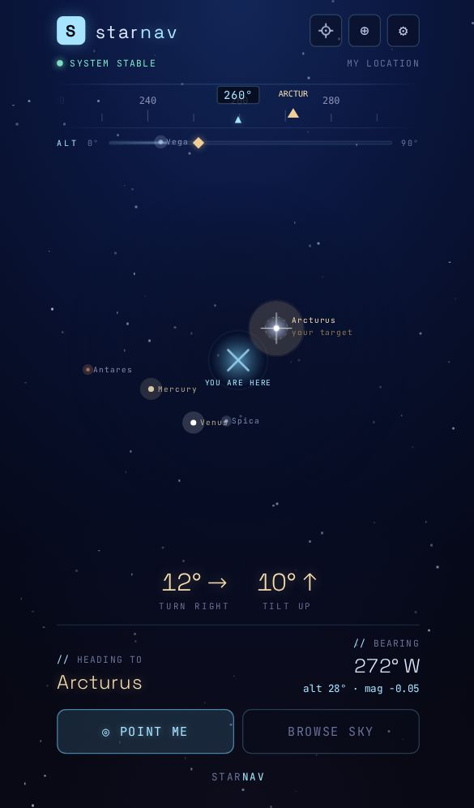
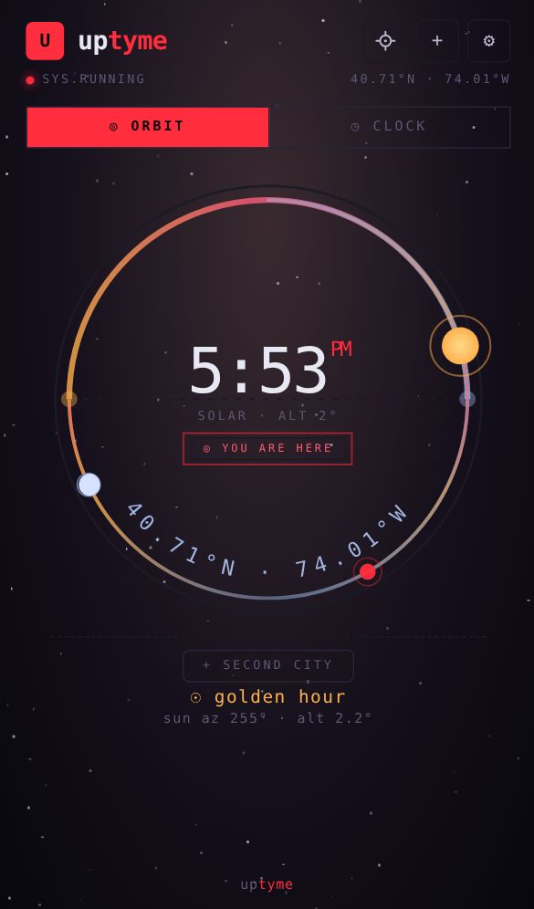
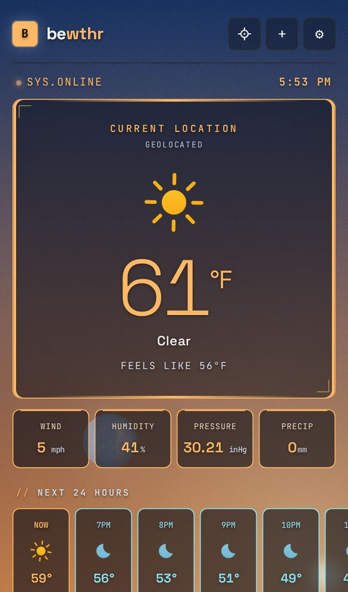
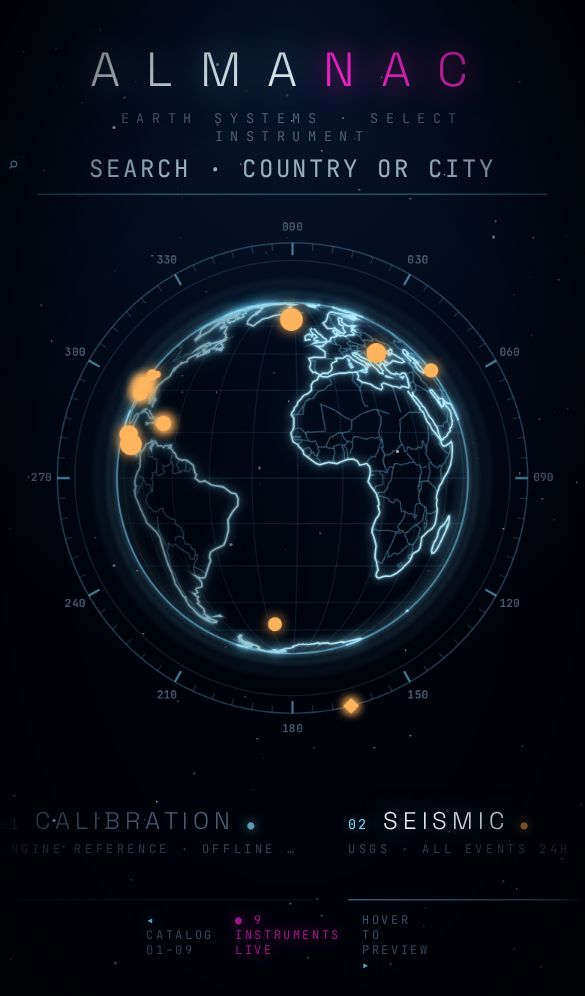
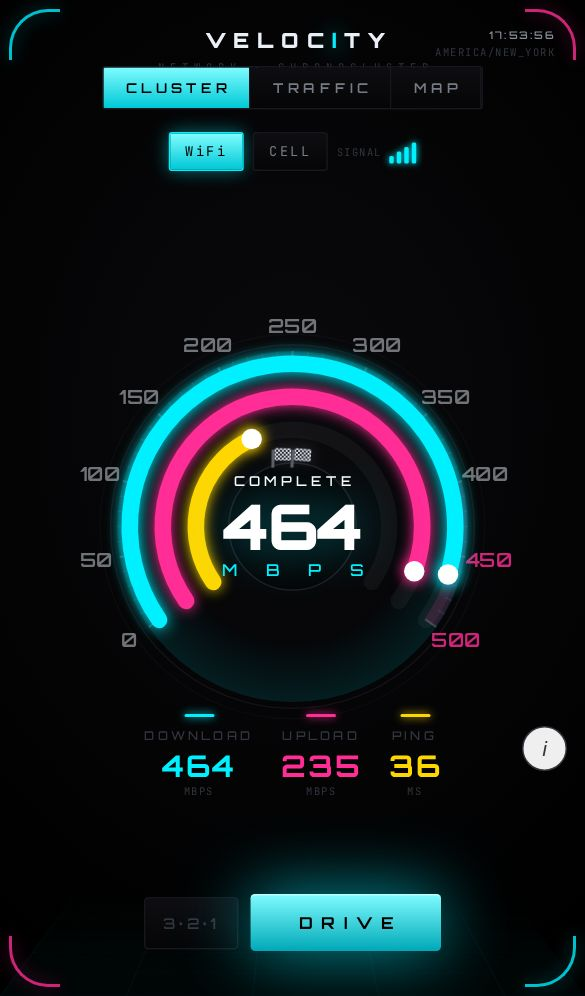

S
starnav
Point at the sky — find what you're looking at. A night-sky navigator.

U
uptyme
Your time, anywhere on Earth — a Clock dial or an Orbit ring.

B
bewthr
The weather, shown as a real, living sky — day, night, stars and the true moon.

A
almanac
A living globe of Earth's systems — the planet, right now.

V
velocity
A network speed test, built as one chronograph instrument.